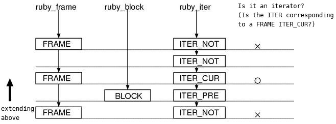
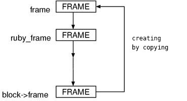
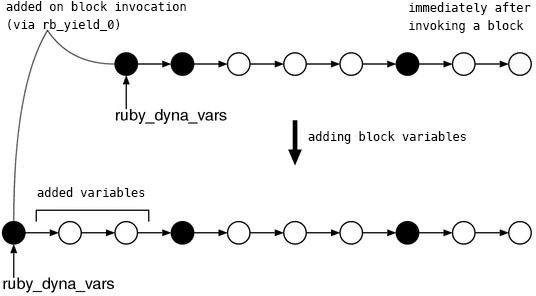
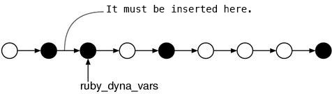
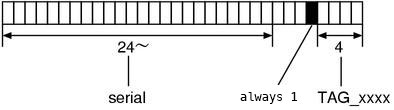
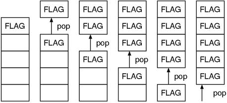

Ruby Hacking Guide
Chapter 16: Blocks
Iterator
In this chapter, BLOCK, which is the last big name among the seven Ruby stacks,
comes in.
After finishing this, the internal state of the evaluator is virtually understood.
The Whole Picture
What is the mechanism of iterators? First, let’s think about a small program as below:
▼The Source Program
iter_method() do 9 # a mark to find this block end
Let’s check the terms just in case.
As for this program, iter_method is an iterator method,
do ~ end is an iterator block.
Here is the syntax tree of this program being dumped.
▼Its Syntax Tree
NODE_ITER
nd_iter:
NODE_FCALL
nd_mid = 9617 (iter_method)
nd_args = (null)
nd_var = (null)
nd_body:
NODE_LIT
nd_lit = 9:Fixnum
Looking for the block by using the 9 written in the iterator block as a trace,
we can understand that NODE_ITER seems to represent the iterator block.
And NODE_FCALL which calls iter_method is at the “below” of that
NODE_ITER. In other words, the node of iterator block appears earlier than the call
of the iterator method. This means, before calling an iterator method,
a block is pushed at another node.
And checking by following the flow of code with debugger,
I found that the invocation of an iterator is separated into 3 steps:
NODE_ITER NODE_CALL and NODE_YIELD.
This means,
- push a block (
NODE_ITER) - call the method which is an iterator (
NODE_CALL) yield(NODE_YEILD)
that’s all.
Push a block
First, let’s start with the first step, that is NODE_ITER, which is the node
to push a block.
▼ rb_eval() − NODE_ITER (simplified)
case NODE_ITER:
{
iter_retry:
PUSH_TAG(PROT_FUNC);
PUSH_BLOCK(node->nd_var, node->nd_body);
state = EXEC_TAG();
if (state == 0) {
PUSH_ITER(ITER_PRE);
result = rb_eval(self, node->nd_iter);
POP_ITER();
}
else if (_block.tag->dst == state) {
state &= TAG_MASK;
if (state == TAG_RETURN || state == TAG_BREAK) {
result = prot_tag->retval;
}
}
POP_BLOCK();
POP_TAG();
switch (state) {
case 0:
break;
case TAG_RETRY:
goto iter_retry;
case TAG_BREAK:
break;
case TAG_RETURN:
return_value(result);
/* fall through */
default:
JUMP_TAG(state);
}
}
break;
Since the original code contains the support of the for statement, it is
deleted. After removing the code relating to tags,
there are only push/pop of ITER and BLOCK left.
Because the rest is ordinarily doing rb_eval() with NODE_FCALL,
these ITER and BLOCK are the necessary conditions to turn a method into an iterator.
The necessity of pushing BLOCK is fairly reasonable, but what’s ITER for?
Actually, to think about the meaning of ITER, you need to think from the
viewpoint of the side that uses BLOCK.
For example, suppose a method is just called. And ruby_block exists.
But since BLOCK is pushed regardless of the break of method calls,
the existence of a block does not mean the block is pushed for that method.
It’s possible that the block is pushed for the previous method. (Figure 1)

Figure 1: no one-to-one correspondence between FRAME and BLOCK
- 上が先端 the end is above
- FRAMEに対応するBLOCKがあるか？ Is there any BLOCK that corresponds to FRAME ?
- ある（けどイテレータではない） Yes. (But, this is not an iterator.)
- ある（本当にイテレータ） Yes. (this is actually an iterator.)
- ない No.
So, in order to determine for which method the block is pushed, ITER is used.
BLOCK is not pushed for each FRAME
because pushing BLOCK is a little heavy.
How much heavy is,
let’s check it in practice.
PUSH_BLOCK()
The argument of PUSH_BLOCK() is (the syntax tree of) the block parameter and
the block body.
▼ PUSH_BLOCK() POP_BLOCK()
592 #define PUSH_BLOCK(v,b) do { \
593 struct BLOCK _block; \
594 _block.tag = new_blktag(); \
595 _block.var = v; \
596 _block.body = b; \
597 _block.self = self; \
598 _block.frame = *ruby_frame; \
599 _block.klass = ruby_class; \
600 _block.frame.node = ruby_current_node;\
601 _block.scope = ruby_scope; \
602 _block.prev = ruby_block; \
603 _block.iter = ruby_iter->iter; \
604 _block.vmode = scope_vmode; \
605 _block.flags = BLOCK_D_SCOPE; \
606 _block.dyna_vars = ruby_dyna_vars; \
607 _block.wrapper = ruby_wrapper; \
608 ruby_block = &_block
610 #define POP_BLOCK() \
611 if (_block.tag->flags & (BLOCK_DYNAMIC)) \
612 _block.tag->flags |= BLOCK_ORPHAN; \
613 else if (!(_block.scope->flags & SCOPE_DONT_RECYCLE)) \
614 rb_gc_force_recycle((VALUE)_block.tag); \
615 ruby_block = _block.prev; \
616 } while (0)
(eval.c)
Let’s make sure that a BLOCK is “the snapshot of the environment of the moment
of creation”. As a proof of it, except for CREF and BLOCK, the six stack
frames are saved. CREF can be substituted by ruby_frame->cbase, there’s no
need to push.
And, I’d like to check the three points about the mechanism of push.
BLOCK is fully allocated on the stack.
BLOCK contains the full copy of FRAME at the moment.
BLOCK is different from the other many stack frame structs in having the
pointer to the previous BLOCK (prev).
The flags used in various ways at POP_BLOCK() is not explained now
because it can only be understood after seeing the implementation of Proc
later.
And the talk is about “BLOCK is heavy”, certainly it seems a little heavy.
When looking inside of new_blktag(),
we can see it does malloc() and store plenty of members.
But let’s defer the final judge until after looking at and comparing with PUSH_ITER().
PUSH_ITER()
▼ PUSH_ITER() POP_ITER()
773 #define PUSH_ITER(i) do { \
774 struct iter _iter; \
775 _iter.prev = ruby_iter; \
776 _iter.iter = (i); \
777 ruby_iter = &_iter
779 #define POP_ITER() \
780 ruby_iter = _iter.prev; \
781 } while (0)
(eval.c)
On the contrary, this is apparently light.
It only uses the stack space and has only two members.
Even if this is pushed for each FRAME,
it would probably matter little.
Iterator Method Call
After pushing a block, the next thing is to call an iterator method (a method
which is an iterator). There also needs a little machinery.
Do you remember that there’s a code to modify
the value of ruby_iter at the beginning of rb_call0?
Here.
▼ rb_call0() − moving to ITER_CUR
4498 switch (ruby_iter->iter) {
4499 case ITER_PRE:
4500 itr = ITER_CUR;
4501 break;
4502 case ITER_CUR:
4503 default:
4504 itr = ITER_NOT;
4505 break;
4506 }
(eval.c)
Since ITER_PRE is pushed previously at NODE_TER, this code makes
ruby_iter ITER_CUR.
At this moment, a method finally “becomes” an iterator.
Figure 2 shows the state of the stacks.

Figure 2: the state of the Ruby stacks on an iterator call.
- 上が先端 the end is above
- イテレータか？（FRAMEに対応するITERがITER_CURか？） Is this an iterator? (Is the ITER corresponds to FRAME ITER_CUR ?)
The possible value of ruby_iter is not the one of two boolean values
(for that method or not), but one of three steps because there’s a little gap
between the timings when pushing a block and invoking an iterator method.
For example, there’s the evaluation of the arguments of an iterator method.
Since it’s possible that it contains method calls inside it,
there’s the possibility that one of that methods mistakenly thinks that the
just pushed block is for itself and uses it during the evaluation.
Therefore, the timing when a method becomes an iterator,
this means turning into ITER_CUR,
has to be the place inside of rb_call() that is just before finishing the invocation.
▼ the processing order
method(arg) { block } # push a block
method(arg) { block } # evaluate the aruguments
method(arg) { block } # a method call
For example, in the last chapter “Method”, there’s a macro named BEGIN_CALLARGS at a handler of NODE_CALL.
This is where making use of the third step ITER.
Let’s go back a little and try to see it.
BEGIN_CALLARGS END_CALLARGS
▼ BEGIN_CALLARGS END_CALLARGS
1812 #define BEGIN_CALLARGS do {\
1813 struct BLOCK *tmp_block = ruby_block;\
1814 if (ruby_iter->iter == ITER_PRE) {\
1815 ruby_block = ruby_block->prev;\
1816 }\
1817 PUSH_ITER(ITER_NOT)
1819 #define END_CALLARGS \
1820 ruby_block = tmp_block;\
1821 POP_ITER();\
1822 } while (0)
(eval.c)
When ruby_iter is ITER_PRE, a ruby_block is set aside.
This code is important, for instance, in the below case:
obj.m1 { yield }.m2 { nil }
The evaluation order of this expression is:
- push the block of
m2 - push the block of
m1 - call the method
m1 - call the method
m2
Therefore, if there was not BEGIN_CALLARGS,
m1 will call the block of m2.
And, if there’s one more iterator connected,
the number of BEGIN_CALLARGS increases at the same time in this case,
so there’s no problem.
Block Invocation
The third phase of iterator invocation, it means the last phase, is block invocation.
▼ rb_eval() − NODE_YIELD
2579 case NODE_YIELD:
2580 if (node->nd_stts) {
2581 result = avalue_to_yvalue(rb_eval(self, node->nd_stts));
2582 }
2583 else {
2584 result = Qundef; /* no arg */
2585 }
2586 SET_CURRENT_SOURCE();
2587 result = rb_yield_0(result, 0, 0, 0);
2588 break;
(eval.c)
nd_stts is the parameter of yield.
avalue_to_yvalue() was mentioned a little at the multiple assignments,
but you can ignore this.
((errata: actually, it was not mentioned. You can ignore this anyway.))
The heart of the behavior is not this but rb_yield_0().
Since this function is also very long,
I show the code after extremely simplifying it.
Most of the methods to simplify are previously used.
- cut the codes relating to
trace_func. - cut errors
- cut the codes exist only to prevent from GC
- As the same as
massign(), there’s the parameterpcall. This parameter is to change the level of restriction of the parameter check, so not important here. Therefore, assumepcal=0and perform constant foldings.
And this time, I turn on the “optimize for readability option” as follows.
- when a code branching has equivalent kind of branches, leave the main one and cut the rest.
- if a condition is true/false in the almost all case, assume it is true/false.
- assume there’s no tag jump occurs, delete all codes relating to tag.
If things are done until this, it becomes very shorter.
▼ rb_yield_0() (simplified)
static VALUE
rb_yield_0(val, self, klass, /* pcall=0 */)
VALUE val, self, klass;
{
volatile VALUE result = Qnil;
volatile VALUE old_cref;
volatile VALUE old_wrapper;
struct BLOCK * volatile block;
struct SCOPE * volatile old_scope;
struct FRAME frame;
int state;
PUSH_VARS();
PUSH_CLASS();
block = ruby_block;
frame = block->frame;
frame.prev = ruby_frame;
ruby_frame = &(frame);
old_cref = (VALUE)ruby_cref;
ruby_cref = (NODE*)ruby_frame->cbase;
old_wrapper = ruby_wrapper;
ruby_wrapper = block->wrapper;
old_scope = ruby_scope;
ruby_scope = block->scope;
ruby_block = block->prev;
ruby_dyna_vars = new_dvar(0, 0, block->dyna_vars);
ruby_class = block->klass;
self = block->self;
/* set the block arguments */
massign(self, block->var, val, pcall);
PUSH_ITER(block->iter);
/* execute the block body */
result = rb_eval(self, block->body);
POP_ITER();
POP_CLASS();
/* ……collect ruby_dyna_vars…… */
POP_VARS();
ruby_block = block;
ruby_frame = ruby_frame->prev;
ruby_cref = (NODE*)old_cref;
ruby_wrapper = old_wrapper;
ruby_scope = old_scope;
return result;
}
As you can see, the most stack frames are replaced with what saved at ruby_block.
Things to simple save/restore are easy to understand,
so let’s see the handling of the other frames we need to be careful about.
FRAME
struct FRAME frame; frame = block->frame; /* copy the entire struct */ frame.prev = ruby_frame; /* by these two lines…… */ ruby_frame = &(frame); /* ……frame is pushed */
Differing from the other frames, a FRAME is not used in the saved state,
but a new FRAME is created by duplicating.
This would look like Figure 3.

Figure 3: push a copied frame
- コピーして作る creating by copying
As we’ve seen the code until here,
it seems that FRAME will never be “reused”.
When pushing FRAME, a new FRAME will always be created.
BLOCK
block = ruby_block;
：
ruby_block = block->prev;
：
ruby_block = block;
What is the most mysterious is this behavior of BLOCK.
We can’t easily understand whether it is saving or popping.
It’s comprehensible that the first statement and the third statement are as a pair,
and the state will be eventually back.
However, what is the consequence of the second statement?
To put the consequence of I’ve pondered a lot in one phrase,
“going back to the ruby_block of at the moment when pushing the block”.
An iterator is, in short, the syntax to go back to the previous frame.
Therefore, all we have to do is turning the state of the stack frame into what
was at the moment when creating the block.
And, the value of ruby_block at the moment when creating the block is,
it seems certain that it was block->prev.
Therefore, it is contained in prev.
Additionally, for the question “is it no problem to assume what invoked is
always the top of ruby_block?”,
there’s no choice but saying “as the rb_yield_0 side, you can assume so”.
To push the block which should be invoked on the top of the ruby_block is the
work of the side to prepare the block,
and not the work of rb_yield_0.
An example of it is BEGIN_CALLARGS which was discussed in the previous chapter.
When an iterator call cascades, the two blocks are pushed and the top of the
stack will be the block which should not be used.
Therefore, it is purposefully checked and set aside.
VARS
Come to think of it,
I think we have not looked the contents of PUSH_VARS() and POP_VARS() yet.
Let’s see them here.
▼ PUSH_VARS() POP_VARS()
619 #define PUSH_VARS() do { \
620 struct RVarmap * volatile _old; \
621 _old = ruby_dyna_vars; \
622 ruby_dyna_vars = 0
624 #define POP_VARS() \
625 if (_old && (ruby_scope->flags & SCOPE_DONT_RECYCLE)) { \
626 if (RBASIC(_old)->flags) /* if were not recycled */ \
627 FL_SET(_old, DVAR_DONT_RECYCLE); \
628 } \
629 ruby_dyna_vars = _old; \
630 } while (0)
(eval.c)
This is also not pushing a new struct, to say “set aside/restore” is closer.
In practice, in rb_yield_0, PUSH_VARS() is used only to set aside the value.
What actually prepares ruby_dyna_vars is this line.
ruby_dyna_vars = new_dvar(0, 0, block->dyna_vars);
This takes the dyna_vars saved in BLOCK and sets it.
An entry is attached at the same time.
I’d like you to recall the description of the structure of ruby_dyna_vars in Part 2,
it said the RVarmap whose id is 0 such as the one created here is used as
the break between block scopes.
However, in fact, between the parser and the evaluator, the form of the link
stored in ruby_dyna_vars is slightly different.
Let’s look at the dvar_asgn_curr() function, which assigns a block local
variable at the current block.
▼ dvar_asgn_curr()
737 static inline void
738 dvar_asgn_curr(id, value)
739 ID id;
740 VALUE value;
741 {
742 dvar_asgn_internal(id, value, 1);
743 }
699 static void
700 dvar_asgn_internal(id, value, curr)
701 ID id;
702 VALUE value;
703 int curr;
704 {
705 int n = 0;
706 struct RVarmap *vars = ruby_dyna_vars;
707
708 while (vars) {
709 if (curr && vars->id == 0) {
710 /* first null is a dvar header */
711 n++;
712 if (n == 2) break;
713 }
714 if (vars->id == id) {
715 vars->val = value;
716 return;
717 }
718 vars = vars->next;
719 }
720 if (!ruby_dyna_vars) {
721 ruby_dyna_vars = new_dvar(id, value, 0);
722 }
723 else {
724 vars = new_dvar(id, value, ruby_dyna_vars->next);
725 ruby_dyna_vars->next = vars;
726 }
727 }
(eval.c)
The last if statement is to add a variable.
If we focus on there, we can see a link is always pushed in at the “next” to
ruby_dyna_vars. This means, it would look like Figure 4.

Figure 4: the structure of ruby_dyna_vars
- ブロック起動時に(rb_yield_0で)追加 added (by using
rb_yield_0) when invoking a block - ブロック起動直後 immediately after invoking a block
- ブロック変数を追加 add block variables
- 追加された変数 added variables
This differs from the case of the parser in one point:
the headers (id=0) to indicate the breaks of scopes are attached before the
links. If a header is attached after the links, the first one of the scope
cannot be inserted properly. (Figure 5)
((errata: It was described that ruby_dyna_vars of the evaluator always forms
a single straight link.
But according to the errata, it was wrong. That part and relevant descriptions
are removed.))

Figure 5: cannot properly insert an entry
- ここに挿入しないといけない must be inserted here
Target Specified Jump
The code relates to jump tags are omitted in the previously shown code,
but there’s an effort that we’ve never seen before in the jump of rb_yield_0.
Why is the effort necessary?
I’ll tell the reason in advance. I’d like you to see the below program:
[0].each do break end # the place to reach by break
like this way, in the case when doing break from inside of a block,
it is necessary to get out of the block and go to the method that pushed the
block.
What does it actually mean?
Let’s think by looking at the (dynamic) call graph when invoking an iterator.
rb_eval(NODE_ITER) .... catch(TAG_BREAK)
rb_eval(NODE_CALL) .... catch(TAG_BREAK)
rb_eval(NODE_YIELD)
rb_yield_0
rb_eval(NODE_BREAK) .... throw(TAG_BREAK)
Since what pushed the block is NODE_ITER,
it should go back to a NODE_ITER when doing break.
However, NODE_CALL is waiting for TAG_BREAK before NODE_ITER,
in order to turn a break over methods into an error.
This is a problem. We need to somehow find a way to go straight back to a NODE_ITER.
And actually, “going back to a NODE_ITER” will still be a problem.
If iterators are nesting,
there could be multiple NODE_ITERs,
thus the one corresponds to the current block is not always the first NODE_ITER.
In other words, we need to restrict only “the NODE_ITER that pushed the
currently being invoked block”
Then, let’s see how this is resolved.
▼ rb_yield_0() − the parts relates to tags
3826 PUSH_TAG(PROT_NONE);
3827 if ((state = EXEC_TAG()) == 0) {
/* ……evaluate the body…… */
3838 }
3839 else {
3840 switch (state) {
3841 case TAG_REDO:
3842 state = 0;
3843 CHECK_INTS;
3844 goto redo;
3845 case TAG_NEXT:
3846 state = 0;
3847 result = prot_tag->retval;
3848 break;
3849 case TAG_BREAK:
3850 case TAG_RETURN:
3851 state |= (serial++ << 8);
3852 state |= 0x10;
3853 block->tag->dst = state;
3854 break;
3855 default:
3856 break;
3857 }
3858 }
3859 POP_TAG();
(eval.c)
The parts of TAG_BREAK and TAG_RETURN are crucial.
First, serial is a static variable of rb_yield_0(),
its value will be different every time calling rb_yield_0.
“serial” is the serial of “serial number”.
The reason why left shifting by 8 bits seems in order to avoid overlapping the
values of TAG_xxxx.
TAG_xxxx is in the range between 0x1 ~ 0x8, 4 bits are enough.
And, the bit-or of 0x10 seems to prevent serial from overflow.
In 32-bit machine, serial can use only 24 bits (only 16 million times),
recent machine can let it overflow within less than 10 seconds.
If this happens, the top 24 bits become all 0 in line.
Therefore, if 0x10 did not exist, state would be the same value as TAG_xxxx
(See also Figure 6).

Fig.6: block->tag->dst
- 常に１ always 1
Now, tag->dst became the value which differs from TAG_xxxx and is unique for each call.
In this situation, because an ordinary switch as previous ones cannot receive it,
the side to stop jumps should need efforts to some extent.
The place where making an effort is this place of rb_eval:NODE_ITER:
▼ rb_eval() − NODE_ITER (to stop jumps)
case NODE_ITER:
{
state = EXEC_TAG();
if (state == 0) {
/* …… invoke an iterator …… */
}
else if (_block.tag->dst == state) {
state &= TAG_MASK;
if (state == TAG_RETURN || state == TAG_BREAK) {
result = prot_tag->retval;
}
}
}
In corresponding NODE_ITER and rb_yield_0, block should point to the same thing,
so tag->dst which was set at rb_yield_0 comes in here.
Because of this, only the corresponding NODE_ITER can properly stop the jump.
Check of a block
Whether or not a currently being evaluated method is an iterator,
in other words, whether there’s a block,
can be checked by rb_block_given_p().
After reading the above all, we can tell its implementation.
▼ rb_block_given_p()
3726 int
3727 rb_block_given_p()
3728 {
3729 if (ruby_frame->iter && ruby_block)
3730 return Qtrue;
3731 return Qfalse;
3732 }
(eval.c)
I think there’s no problem. What I’d like to talk about this time is actually
another function to check, it is rb_f_block_given_p().
▼ rb_f_block_given_p()
3740 static VALUE
3741 rb_f_block_given_p()
3742 {
3743 if (ruby_frame->prev && ruby_frame->prev->iter && ruby_block)
3744 return Qtrue;
3745 return Qfalse;
3746 }
(eval.c)
This is the substance of Ruby’s block_given?.
In comparison to rb_block_given_p(),
this is different in checking the prev of ruby_frame.
Why is this?
Thinking about the mechanism to push a block,
to check the current ruby_frame like rb_block_given_p() is right.
But when calling block_given? from Ruby-level,
since block_given? itself is a method,
an extra FRAME is pushed.
Hence, we need to check the previous one.
Proc
To describe a Proc object from the viewpoint of implementing,
it is “a BLOCK which can be bring out to Ruby level”.
Being able to bring out to Ruby level means having more latitude,
but it also means when and where it will be used becomes completely unpredictable.
Focusing on how the influence of this fact is, let’s look at the implementation.
Proc object creation
A Proc object is created with Proc.new.
Its substance is proc_new().
▼ proc_new()
6418 static VALUE
6419 proc_new(klass)
6420 VALUE klass;
6421 {
6422 volatile VALUE proc;
6423 struct BLOCK *data, *p;
6424 struct RVarmap *vars;
6425
6426 if (!rb_block_given_p() && !rb_f_block_given_p()) {
6427 rb_raise(rb_eArgError,
"tried to create Proc object without a block");
6428 }
6429
/* （A）allocate both struct RData and struct BLOCK */
6430 proc = Data_Make_Struct(klass, struct BLOCK,
blk_mark, blk_free, data);
6431 *data = *ruby_block;
6432
6433 data->orig_thread = rb_thread_current();
6434 data->wrapper = ruby_wrapper;
6435 data->iter = data->prev?Qtrue:Qfalse;
/* （B）the essential initialization is finished by here */
6436 frame_dup(&data->frame);
6437 if (data->iter) {
6438 blk_copy_prev(data);
6439 }
6440 else {
6441 data->prev = 0;
6442 }
6443 data->flags |= BLOCK_DYNAMIC;
6444 data->tag->flags |= BLOCK_DYNAMIC;
6445
6446 for (p = data; p; p = p->prev) {
6447 for (vars = p->dyna_vars; vars; vars = vars->next) {
6448 if (FL_TEST(vars, DVAR_DONT_RECYCLE)) break;
6449 FL_SET(vars, DVAR_DONT_RECYCLE);
6450 }
6451 }
6452 scope_dup(data->scope);
6453 proc_save_safe_level(proc);
6454
6455 return proc;
6456 }
(eval.c)
The creation of a Proc object itself is unexpectedly simple.
Between (A) and (B), a space for an Proc object is allocated and its
initialization completes.
Data_Make_Struct() is a simple macro that does both malloc() and
Data_Wrap_Struct() at the same time.
The problems exist after that:
frame_dup()blk_copy_prev()FL_SET(vars, DVAR_DONT_RECYCLE)scope_dup()
These four have the same purposes. They are:
- move all of what were put on the machine stack to the heap.
- prevent from collecting even if after
POP
Here, “all” means the all things including prev.
For the all stack frames pushed there, it duplicates each frame by
doing malloc() and copying.
VARS is usually forced to be collected by rb_gc_force_recycle() at the same moment of POP,
but this behavior is stopped by setting the DVAR_DONT_RECYCLE flag.
And so on. Really extreme things are done.
Why are these extreme things necessary? This is because, unlike iterator blocks,
a Proc can persist longer than the method that created it.
And the end of a method means the things allocated on the machine stack such as
FRAME, ITER, and local_vars of SCOPE are invalidated.
It’s easy to predict what the consequence of using the invalidated memories.
(An example answer: it becomes troublesome).
I tried to contrive a way to at least use the same FRAME from multiple Proc,
but since there are the places such as old_frame where setting aside the
pointers to the local variables, it does not seem going well.
If it requires a lot efforts in anyway,
another effort, say, allocating all of them with malloc() from the frist place,
seems better to give it a try.
Anyway, I sentimentally think that it’s surprising that it runs with that speed even though doing these extreme things. Indeed, it has become a good time.
Floating Frame
Previously, I mentioned it just in one phrase “duplicate all frames”, but since that was unclear, let’s look at more details. The points are the next two:
- How to duplicate all
- Why all of them are duplicated
Then first, let’s start with the summary of how each stack frame is saved.
| Frame | location | has prev pointer? |
|---|---|---|
FRAME |
stack | yes |
SCOPE |
stack | no |
local_tbl |
heap | |
local_vars |
stack | |
VARS |
heap | no |
BLOCK |
stack | yes |
CLASS CREF ITER are not necessary this time. Since CLASS is a general Ruby
object, rb_gc_force_recycle() is not called with it even by mistake (it’s
impossible) and both CREF and ITER becomes unnecessary after storing its
values at the moment in FRAME.
The four frames in the above table are important
because these will be modified or referred to multiple times later.
The rest three will not.
Then, this talk moves to how to duplicate all.
I said “how”, but it does not about such as “by malloc()”.
The problem is how to duplicate “all”.
It is because, here I’d like you to see the above table,
there are some frames without any prev pointer.
In other words, we cannot follow links.
In this situation, how can we duplicate all?
A fairly clever technique used to counter this.
Let’s take SCOPE as an example.
A function named scope_dup() is used previously in order to duplicate SCOPE,
so let’s see it first.
▼ scope_dup() only the beginning
6187 static void
6188 scope_dup(scope)
6189 struct SCOPE *scope;
6190 {
6191 ID *tbl;
6192 VALUE *vars;
6193
6194 scope->flags |= SCOPE_DONT_RECYCLE;
(eval.c)
As you can see, SCOPE_DONT_RECYCLE is set.
Then next, take a look at the definition of POP_SCOPE():
▼ POP_SCOPE() only the beginning
869 #define POP_SCOPE() \
870 if (ruby_scope->flags & SCOPE_DONT_RECYCLE) { \
871 if (_old) scope_dup(_old); \
872 } \
(eval.c)
When it pops, if SCOPE_DONT_RECYCLE flag was set to the current SCOPE (ruby_scope),
it also does scope_dup() of the previous SCOPE (_old).
In other words, SCOPE_DONT_RECYCLE is also set to this one.
In this way, one by one, the flag is propagated at the time when it pops.
(Figure 7)

Figure 7: flag propagation
Since VARS also does not have any prev pointer,
the same technique is used to propagate the DVAR_DONT_RECYCLE flag.
Next, the second point, try to think about “why all of them are duplicated”.
We can understand that the local variables of SCOPE can be referred to later
if its Proc is created.
However, is it necessary to copy all of them including the previous SCOPE in
order to accomplish that?
Honestly speaking, I couldn’t find the answer of this question and has been worried about how can I write this section for almost three days, I’ve just got the answer. Take a look at the next program:
def get_proc
Proc.new { nil }
end
env = get_proc { p 'ok' }
eval("yield", env)
I have not explained this feature, but by passing a Proc object as the second
argument of eval, you can evaluate the string in that environment.
It means, as the readers who have read until here can probably tell, it pushes
the various environments taken from the Proc (meaning BLOCK) and evaluates.
In this case, it naturally also pushes BLOCK and
you can turn the BLOCK into a Proc again.
Then, using the Proc when doing eval … if things are done like this, you
can access almost all information of ruby_block from Ruby level as you like.
This is the reason why the entire stacks need to be fully duplicated.
((errata: we cannot access ruby_block as we like from Ruby level.
The reason why all SCOPEs are duplicated was not understood.
It seems all we can do is to investigate the mailing list archives of the time
when this change was applied. (It is still not certain whether we can find out
the reason in this way.)
))
Invocation of Proc
Next, we’ll look at the invocation of a created Proc.
Since Proc#call can be used from Ruby to invoke,
we can follow the substance of it.
The substance of Proc#call is proc_call():
▼ proc_call()
6570 static VALUE
6571 proc_call(proc, args)
6572 VALUE proc, args; /* OK */
6573 {
6574 return proc_invoke(proc, args, Qtrue, Qundef);
6575 }
(eval.c)
Delegate to proc_invoke(). When I look up invoke in a dictionary,
it was written such as “call on (God, etc.) for help”,
but when it is in the context of programming,
it is often used in the almost same meaning as “activate”.
The prototype of the proc_invoke() is,
proc_invoke(VALUE proc, VALUE args, int pcall, VALUE self)
However, according to the previous code, pcall=Qtrue and self=Qundef in this case,
so these two can be removed by constant foldings.
▼ proc_invoke (simplified)
static VALUE
proc_invoke(proc, args, /* pcall=Qtrue */, /* self=Qundef */)
VALUE proc, args;
VALUE self;
{
struct BLOCK * volatile old_block;
struct BLOCK _block;
struct BLOCK *data;
volatile VALUE result = Qnil;
int state;
volatile int orphan;
volatile int safe = ruby_safe_level;
volatile VALUE old_wrapper = ruby_wrapper;
struct RVarmap * volatile old_dvars = ruby_dyna_vars;
/*（A）take BLOCK from proc and assign it to data */
Data_Get_Struct(proc, struct BLOCK, data);
/*（B）blk_orphan */
orphan = blk_orphan(data);
ruby_wrapper = data->wrapper;
ruby_dyna_vars = data->dyna_vars;
/*（C）push BLOCK from data */
old_block = ruby_block;
_block = *data;
ruby_block = &_block;
/*（D）transition to ITER_CUR */
PUSH_ITER(ITER_CUR);
ruby_frame->iter = ITER_CUR;
PUSH_TAG(PROT_NONE);
state = EXEC_TAG();
if (state == 0) {
proc_set_safe_level(proc);
/*（E）invoke the block */
result = rb_yield_0(args, self, 0, pcall);
}
POP_TAG();
POP_ITER();
if (ruby_block->tag->dst == state) {
state &= TAG_MASK; /* target specified jump */
}
ruby_block = old_block;
ruby_wrapper = old_wrapper;
ruby_dyna_vars = old_dvars;
ruby_safe_level = safe;
switch (state) {
case 0:
break;
case TAG_BREAK:
result = prot_tag->retval;
break;
case TAG_RETURN:
if (orphan) { /* orphan procedure */
localjump_error("return from proc-closure", prot_tag->retval);
}
/* fall through */
default:
JUMP_TAG(state);
}
return result;
}
The crucial points are three: C, D, and E.
(C) At NODE_ITER a BLOCK is created from the syntax tree and pushed,
but this time, a BLOCK is taken from Proc and pushed.
(D) It was ITER_PRE before becoming ITER_CUR at rb_call0(),
but this time it goes directly into ITER_CUR.
(E) If the case was an ordinary iterator,
its method call exists before yeild occurs then going to rb_yield_0,
but this time rb_yield_() is directly called and invokes the just pushed block.
In other words, in the case of iterator, the procedures are separated into three places,
NODE_ITER ~ rb_call0() ~ NODE_YIELD. But this time, they are done all at once.
Finally, I’ll talk about the meaning of blk_orphan().
As the name suggests, it is a function to determine the state of “the method
which created the Proc has finished”.
For example, the SCOPE used by a BLOCK has already been popped,
you can determine it has finished.
Block and Proc
In the previous chapter, various things about arguments and parameters of methods are discussed, but I have not described about block parameters yet. Although it is brief, here I’ll perform the final part of that series.
def m(&block) end
This is a “block parameter”. The way to enable this is very simple.
If m is an iterator,
it is certain that a BLOCK was already pushed,
turn it into a Proc and assign into (in this case) the local variable block.
How to turn a block into a Proc is just calling proc_new(), which was previously described.
The reason why just calling is enough can be a little incomprehensible.
However whichever Proc.new or m,
the situation “a method is called and a BLOCK is pushed” is the same.
Therefore, from C level, anytime you can turn a block into a Proc
by just calling proc_new().
And if m is not an iterator, all we have to do is simply assigning nil.
Next, it is the side to pass a block.
m(&block)
This is a “block argument”. This is also simple,
take a BLOCK from (a Proc object stored in) block and push it.
What differs from PUSH_BLOCK() is only whether a BLOCK has already been
created in advance or not.
The function to do this procedure is block_pass().
If you are curious about, check and confirm around it.
However, it really does just only what was described here,
it’s possible you’ll be disappointed…